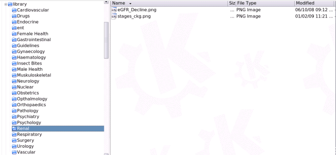
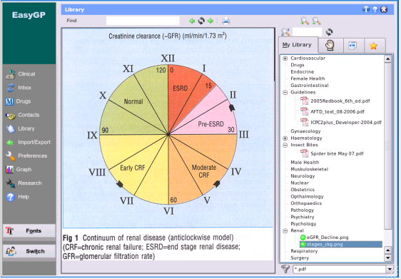

My Library
The directory structure of your own library is up to you, but all files or subdirectories
containing the information that you want to be displayed under the
My Library Tab should be under the main library directory.

You can copy any type of valid file here, eg html files, pdf files, text files or images.
Selecting a file from the list under the My Library tab will display the file in the central
viewing area as shown below.

In the current release of EasyGP, the library directory is common to all users. In future
releases it is planned to make this a user specific subdirectory with the ability to share
files between users if so desired.
The next section will discuss
Patient Handouts